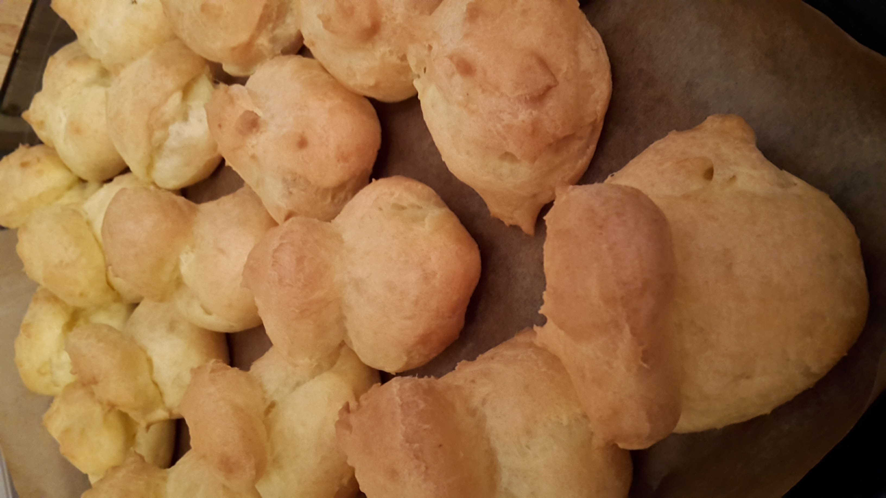

Эклеры

Мука - 150 г Вода - 250 мл Соль - щепотка Маргарин - 100 г Яйца - 3-4 шт
Воду, соль и маргарин в кастрюльке довести до кипения.
Снять с огня и всыпать туда всю муку.
Перемешать, тесто должно легко отставать от стенок.
Остудить, должно быть теплым, но не обжигать палец.
Вбить по одному яйцу, тщательно перемешивая.
Сделать эклеры
Выпекать при 250° 10 мин
Потом 200° - 180° еще 10-15 мин